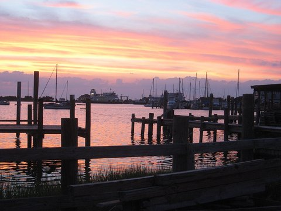
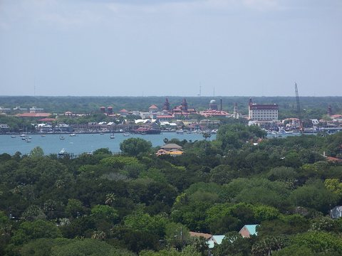

Plan a longer trip
 The Northeast in a week7 nights · Cape May → Newport → Nantucket → Bar Harbor → StoweSeven nights by air: Cape May’s Victorian beach town, Newport’s mansions, Nantucket, Acadia and Bar Harbor, then Stowe in the Green Mountains.
The Northeast in a week7 nights · Cape May → Newport → Nantucket → Bar Harbor → StoweSeven nights by air: Cape May’s Victorian beach town, Newport’s mansions, Nantucket, Acadia and Bar Harbor, then Stowe in the Green Mountains.
 The Colorado and Utah high country7 nights · Aspen → Telluride → Moab → Park City → Steamboat SpringsSeven nights in the mountains: Aspen, Telluride’s box canyon, the red rock of Moab, Park City and Steamboat Springs.
The Colorado and Utah high country7 nights · Aspen → Telluride → Moab → Park City → Steamboat SpringsSeven nights in the mountains: Aspen, Telluride’s box canyon, the red rock of Moab, Park City and Steamboat Springs.
 The California coast7 nights · San Diego → Santa Barbara → Paso Robles Wine Country → Monterey → NapaSeven nights up the coast: San Diego, Santa Barbara, Paso Robles wine country, Monterey and Carmel, and Napa and Sonoma.
The California coast7 nights · San Diego → Santa Barbara → Paso Robles Wine Country → Monterey → NapaSeven nights up the coast: San Diego, Santa Barbara, Paso Robles wine country, Monterey and Carmel, and Napa and Sonoma.
 The upper Great Lakes7 nights · Traverse City → Mackinac Island → Marquette → Bayfield → Door CountySeven nights around Lake Michigan and Lake Superior: Traverse City, Mackinac Island, Marquette and Pictured Rocks, the Apostle Islands and Door County.
The upper Great Lakes7 nights · Traverse City → Mackinac Island → Marquette → Bayfield → Door CountySeven nights around Lake Michigan and Lake Superior: Traverse City, Mackinac Island, Marquette and Pictured Rocks, the Apostle Islands and Door County.
Multi-stop flying trips
Week-long loops built from our guides. Pick your start date and aircraft, then swap stops, change nights or add a stop; the dates, legs and fuel-stop flags update as you go.
The Northeast in a week7 nights · Cape May → Newport → Nantucket → Bar Harbor → StoweSeven nights by air: Cape May’s Victorian beach town, Newport’s mansions, Nantucket, Acadia and Bar Harbor, then Stowe in the Green Mountains.

The Carolina and Georgia coast7 nights · Ocracoke Island → Southport → Charleston → Beaufort → SavannahSeven nights down the coast: Ocracoke’s island airstrip, Southport and Bald Head Island, Charleston, Beaufort and Savannah’s squares.
Florida, coast to Keys7 nights · St. Augustine → Sanibel → Key West → Islamorada → Palm BeachSeven nights around Florida: St. Augustine’s old town, Gulf beaches on Sanibel, Naples, Key West and Islamorada, home by way of Palm Beach.The Colorado and Utah high country7 nights · Aspen → Telluride → Moab → Park City → Steamboat SpringsSeven nights in the mountains: Aspen, Telluride’s box canyon, the red rock of Moab, Park City and Steamboat Springs.
The California coast7 nights · San Diego → Santa Barbara → Paso Robles Wine Country → Monterey → NapaSeven nights up the coast: San Diego, Santa Barbara, Paso Robles wine country, Monterey and Carmel, and Napa and Sonoma.
The upper Great Lakes7 nights · Traverse City → Mackinac Island → Marquette → Bayfield → Door CountySeven nights around Lake Michigan and Lake Superior: Traverse City, Mackinac Island, Marquette and Pictured Rocks, the Apostle Islands and Door County.
Planning estimates only: straight-line distances, no wind. Check weather, NOTAMs, the chart supplement and performance for every leg.